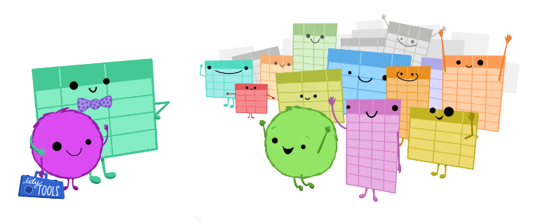
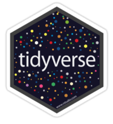
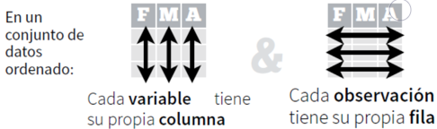
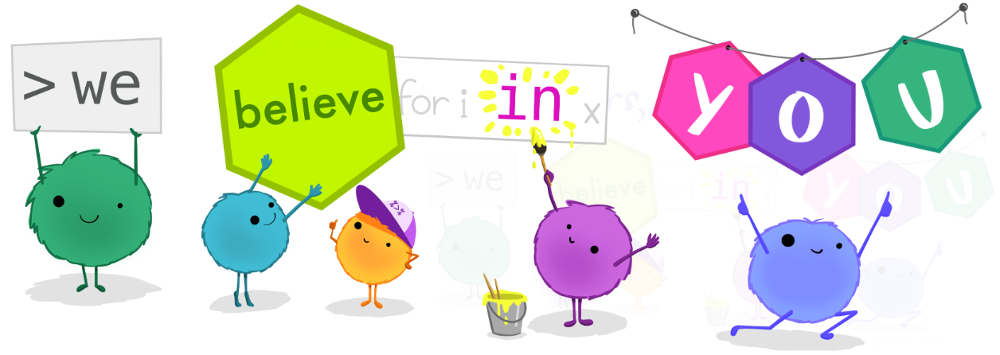
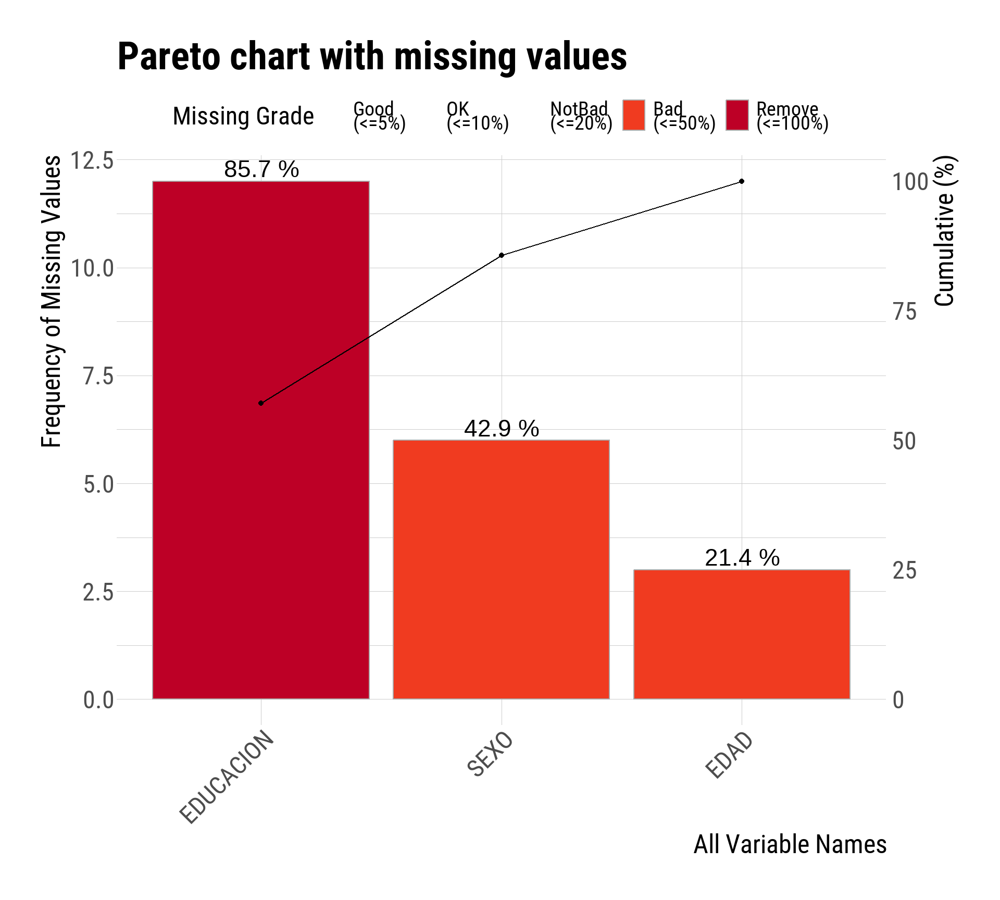
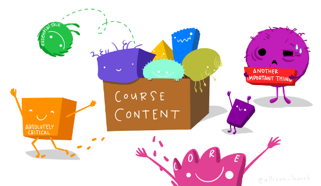
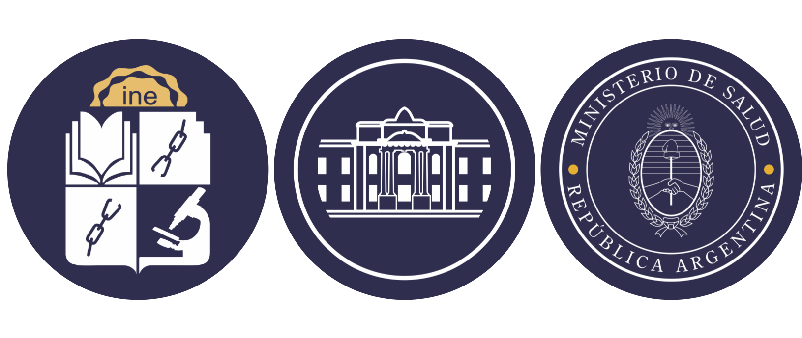

Curso de Epidemiología - Nivel Avanzado
Unidad 1: Introducción a R
Encuentro 20/05/2025

artwork por allison horst
tidyverse

Una colección de paquetes de R modernos, que comparten una gramática y filosofía común, diseñados para resolver los desafíos de la ciencia de datos.
Fundamentos principales de tidyverse

- Estructura ordenada de datos (tidy)
- Cada variable es una columna de la tabla de datos
- Cada observación es una fila de la tabla de datos
- Cada tabla responde a una unidad de análisis
- Principios básicos
- Reutilizar las estructuras de datos
- Resolver problemas complejos combinando (con tuberías) varias piezas sencillas
- Diseño de las funciones para humanos incorporando gramática al lenguaje
Aprendizaje con enfoque “comunicativo”

Abordaje de R como un lenguaje para “comunicarse” (similar a un segundo lenguaje como el inglés, francés, etc.)
Detectar estructura semántica, gramatical y sintáctica.
Se busca comenzar a “decir cosas con datos” en vez de profundizar en las estructuras del lenguaje.
El objetivo es convertirse en “usuario/a” del lenguaje y no un/a “programador/a”.
Sintaxis R base vs tidyverse
- En la sintaxis del R base el símbolo $ es protagonista.
Acompaña al nombre de la tabla de datos (dataframe) cuando queremos llamar a las variables contenidas en ella.
La mayoría de las funciones de R base trabajan sobre vectores o variables de dataframes que internamente se parecen a vectores.
Sintaxis R base vs tidyverse
- En la sintaxis del ecosistema tidyverse el protagonista es el símbolo %>% o |>.
Es una tubería (pipe en inglés) que sirve para conectar partes de código.
Estas estructuras de código inician con el llamado a la tabla de datos.
- La diferencia entre las dos formas sintácticas es:

Lectura de datos
Durante el curso vamos a trabajar con archivos de datos en formato plano, separador ; y extensión .txt generalmente. También podemos llegar a tener que importar datos de algún archivo Excel y datasets que ya vienen incorporados en paquetes de R.
La función de lectura para los archivos planos será read_csv2() del paquete readr que integra tidyverse.
Lectura de datos
La función de lectura para los archivos Excel será read_excel() de readxl que también es parte de tidyverse, aunque en este caso tenemos que activarlo individualmente porque no es parte del grupo núcleo de paquetes.
El archivo de Excel puede ser .xlsx o uno de formato antiguo .xls. Siempre que los datos se encuentren en la primera hoja del libro de trabajo de Excel y comience su cabecera en la primera fila, no hace falta configurar ningún argumento más.
Análisis exploratorio de datos
Los objetivos básicos perseguidos por el análisis exploratorio de datos son:
- Conocer la estructura de la tabla de datos y sus tipos de variable
- Detectar observaciones incompletas (valores missing)
Conocer la distribución de las variables de interés a partir de:
Resumir datos mediante estadísticos
Resumir datos mediante gráficos
Detectar valores atípicos
Conocer la estructura de los datos
Consiste en una exploración técnica asociada a elementos informáticos pero a su vez busca relacionarse con la clasificación estadística de las variables de estudio.
Suele realizarse de la mano de un “diccionario de datos” producido durante el proceso de recolección.
Los tipos de datos elementales que maneja R son: numéricos enteros (integer), numéricos reales (numeric/double), caracter (character), factor (factor), lógicos (logical), fecha (date) y fecha-hora (dttm).
La clasificación estadística de las variables referida es la clásica: variables cualitativas y cuantitativas, continuas y discretas, con escalas nominales, ordinales, de intervalo y de razón.
Detectar observaciones incompletas (valores missing)
Identificar los valores faltantes en las variables nos permite conocer con que tamaño muestral estamos trabajando frente a cada estadístico calculado.
Suele descartarse la variable, cuando la proporción de valores faltantes es alta en el conjunto de observaciones para dicha variable.
Suele descartarse la observación, cuando la proporción de valores faltantes es alta en el conjunto de variables de dicha observación.

Que vamos a mostrar en R/RStudio hoy

Lectura de datos
Tuberías y sintaxis
Creación de nuevas variables
Conversión de factores
Exploración y diagnóstico
Valores perdidos
Análisis descriptivo
Datos atípicos
Consignas del TP evaluativo
